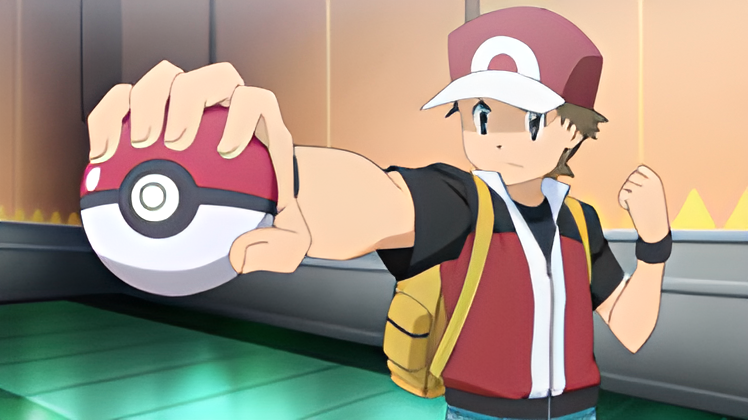
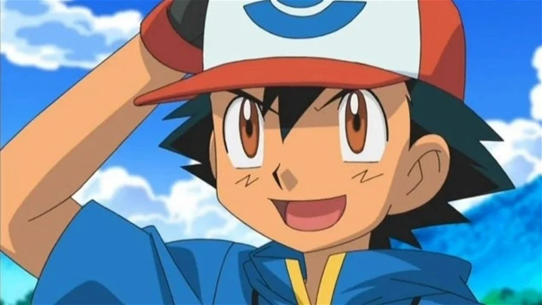
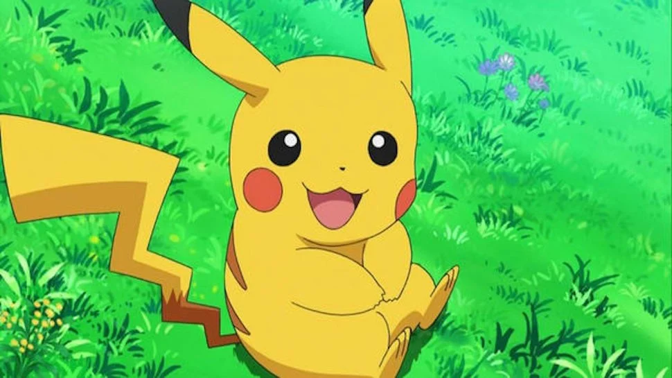
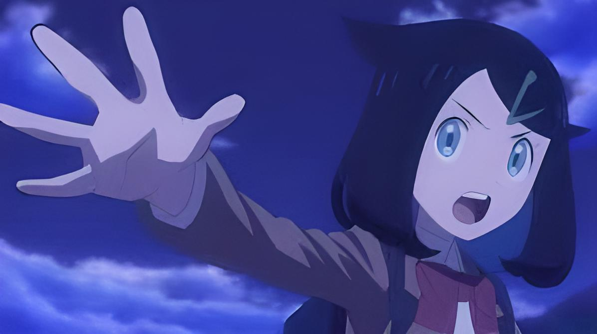

A série dos “Monstros de Bolso” começou quando o criador de jogos e presidente da Game Freak, Satoshi Tajiri,
teve uma ideia inspirada em suas experiências de captura de insetos na escola, quando ainda era criança.
Com isso em mente, ele apresentou seu plano à Nintendo em 1990. Os jogos Pokémon Red e Pokémon Green foram
lançados seis anos depois. Os Pokémons que apareciam nesses jogos eram diferentes no que se refere à facilidade
de serem encontrados, e alguns deles apareciam apenas em um dos jogos. Os jogadores podiam se comunicar entre si
usando tanto o Pokémon Red quanto o Pokémon Green e trocar as criaturas que haviam capturado.
Não demorou muito para os japoneses mergulharem na caçada aos 151 Pokémons que existiam na época.
Detalhes
A série de desenho animado Pokémon estreou na TV em abril de 1997, popularizando a franquia entre os mais jovens
e as pessoas que não jogavam, ou não podiam jogar, os jogos.
Nos jogos Pokémon Red e Pokémon Green, os jogadores podiam escolher o Bulbassauro, o Charmander ou o Squirtle
para ser seu acompanhante. Contudo, no desenho animado, o Pikachu se tornou o parceiro do personagem principal, Ash.
Nos jogos, o Pikachu era um Pokémon raro, que podia ser capturado na Floresta de Viridian. Como já havia
indícios da popularidade do Pikachu antes mesmo da série de TV ser produzida, ele foi escolhido para ser o
companheiro do Ash. Graças ao desenho animado, o Pikachu se tornou conhecido no mundo inteiro. Hoje em dia,
a carismática criaturinha
amarela é extremamente popular, a ponto de ser a primeira coisa que vem à mente das pessoas quando elas
pensam em Pokémon.
Protagonista
Red

Red é um protagonista silencioso apresentado como um garoto de 11 anos fascinado pelas criaturas Pokémon.
Ele começa sua aventura quando recebe do Professor Carvalho um aparelho Pokédex que registra informações
dos Pokémon e parte para completá-lo. Durante suas viagens pela região de Kanto ele também desafia os oito
Líderes de Ginásio em batalhas Pokémon para se tornar o novo campeão local. Red disputa esse objetivo com
seu rival Blue e ainda enfrenta a maligna Equipe Rocket diversas vezes, impedindo seus planos de
cometer crimes usando Pokémon.
Ash Ketchum

Ash é o protagonista do anime Pokémon. Ele é um treinador de Pokémon de 10 anos (nascido em 28 de Agosto),
que tem o sonho de ser o maior Mestre Pokémon do mundo. Na série, Ash compete nas Ligas Pokémon de Kanto,
nas Ilhas Laranja, Johto, Hoenn, Sinnoh, Unova e Kalos, e também na Batalha da Fronteira em Kanto.
Pikachu

Pikachu é o principal Pokémon de Ash, dado a ele pelo Professor Carvalho e o único companheiro que o seguiu
por todas as regiões. Como ele se recusa a entrar na Pokébola, anda ao lado do treinador, algo que foi
incorporado ao jogo Pokémon Yellow, que tem forte influência do anime. Por seu grande potencial que o diferencia
de outros Pikachu, frequentemente vencendo Pokémon muito mais fortes, é frequentemente alvo de planos da
Equipe Rocket para capturá-lo.
Outros
Misty, Tracey Sketchit, Brock, Dawn, Iris, Clément, Bonnie, Serena, Max, Clément, Bonnie e toda a Turma de Alola,
o único de todos esses que pareceu criar um laço mais duradouro com o último companheiro de viagem masculino do
Ash foi Kiawe. E por ultimo Cloe e Goh
Novo protagonista
Liko

É uma das protagonistas de Pokémon Horizons: The Series. Ela possui um pingente misterioso, que foi dado a
ela por sua avó Diana , que mais tarde foi revelada ser um Terápagos hibernando . Liko frequenta remotamente a
Indigo Academy e é membro dos Rising Volt Tacklers. Ela também será acompanhada com um parceiro de viagem
chamado, Rain.